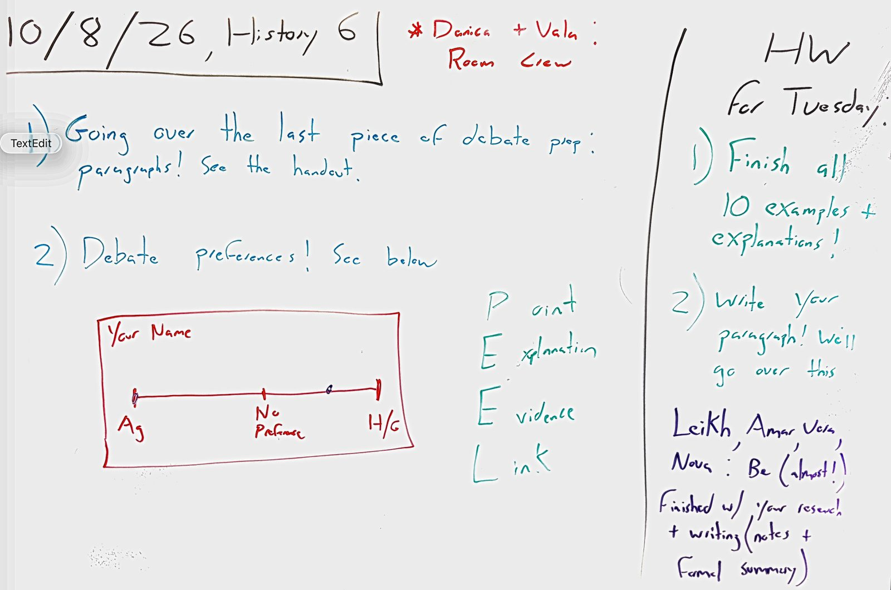

Thursday, 10/8/26 MOST RECENT CLASS

Summary Of Class
- We went over the last piece of debate prep: your paragraph! (See the handout.) A strong paragraph has a Point, an Explanation, Evidence, and a Link.
- Then you shared your debate preferences: agriculture, hunting and gathering, or no preference.
- CED Group 1 (Leikh, Amar, Vera, Nova): keep going on your research + writing, since your Midpoint Meeting is Tuesday!
- Thank you to Danica and Vala for their Room Crew work!
Homework: Finish all 10 examples + explanations, and write your paragraph, due Tuesday, 10/13!
Finish all 10 examples + explanations, and write your paragraph (see the handout)!
Leikh, Amar, Vera, Nova: be (almost!) finished with your research + writing (notes + formal summary).
Board As Text
10/8/26, History 6
* Danica + Vala: Room Crew
1) Going over the last piece of debate prep: paragraphs! See the handout.
2) Debate preferences! See below
[box] Your Name — Ag |———| No Preference |———| H/G
Point / Explanation / Evidence / Link
HW for Tuesday: 1) Finish all 10 examples + explanations! 2) Write your paragraph! We'll go over this
Leikh, Amar, Vera, Nova: Be (almost!) finished w/ your research + writing (notes + formal summary)